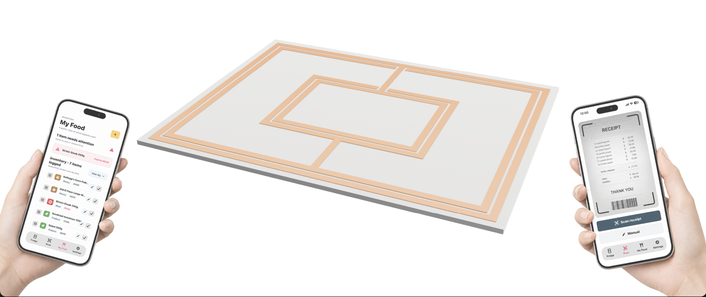

Fridge Pad

Food spoilage in shared university kitchens is a small but constant problem — items get pushed to the back of a fridge, forgotten, and thrown out, often by people who didn't buy them in the first place. Working as part of a team of four, I helped design and build a sensor-equipped pad paired with a companion app aimed at reducing this kind of waste in university accommodation kitchens.
My focus was on the hardware and app integration: getting sensor data from the pad reliably into a usable app interface that nudges users on what needs using up. The project involved early user research into how students actually behave around shared fridges, which shaped a lot of the design decisions around how and when the app should prompt people, rather than just logging data passively.
More detail and photos to come as the project is written up further.